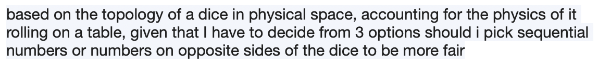
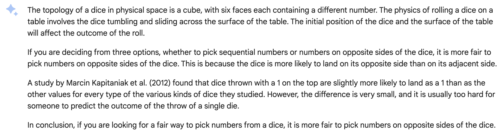
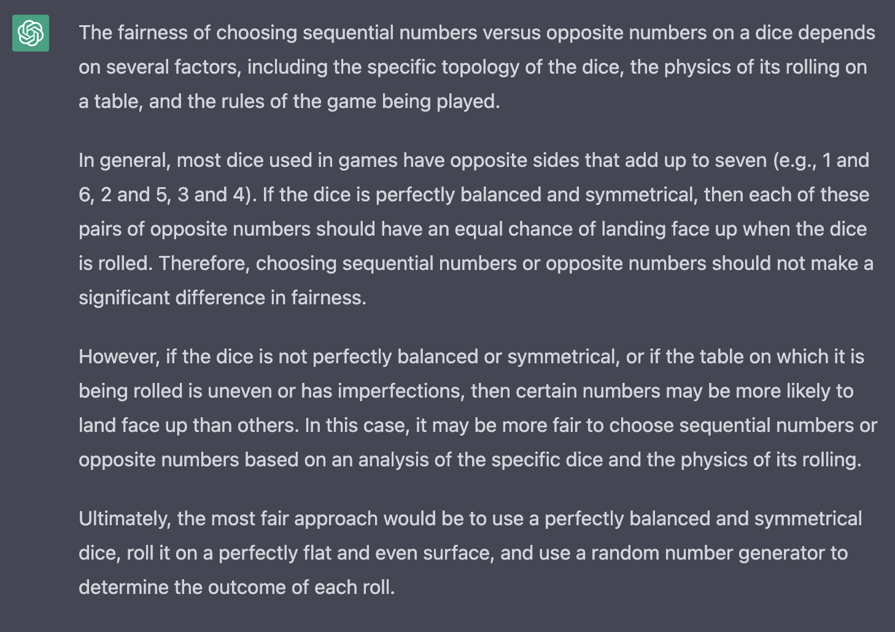

Rather quickly I was able to get access to Google’s Bard (their LLM) so the first thing I decided to do was put it up against ChatGPT (the browser edition freely available). So right off the bat I noticed it hadn’t translated the description of my english query into chinese (progress?) (..I’m giving OpenAI a break because they’ve been experiencing difficulties and at the time of writing this entry I still don’t have the history of previous chats back.)
And it’s impressive actually, I translated the title with google, and it was pretty much as accurate as I would expect google translate to be. I don’t have the direct translation because (the history is gone and I imagine this will be cleaned up), but it’s basically referring to the question I was asking which was seeing how it would interpret the rules to the library of babel.Wikipedia entry for anyone curious. It actually got that wrong, but maybe that will be a later post. Although my question was in english, so what compelled it to then take the english description and then translate it to chinese is beyond me.
Anyway, fast forward to my access to Google’s bard, I had this thought as I was going for a walk about rolling a dice to decide a particular problem. The problem was pretty simple, something a manager asked me once.
Her question was how I would decide which of three projects I would start first, given they are all equally and completely siloed from each other and outside constraints. After some roundabout questioning by me to see if there was a way to expedite how I could solve multiple parts of each project simultaneously (e.g. do they have any overlap whatsoever). Her answer was no, they do not, and I confirmed that given the problem, each was completely statistically equal within the problem space, realistically it didn’t matter which one I chose. There is no “right” answer as to which project should be prioritized of course, this really being a psychological test, which I answered with applomb and moved on with my life.
Anyway as I was walking I was thinking about rolling a dice to decide this problem, since there are only three projects, I would need to group the numbers of the dice into completely equal sets of two (1,2), (3,4), (5,6) etc. However, unlike a random number generator, a dice exists in 3D space, governed by physics. So this had me wondering if there was an optimal grouping given physical constraints (rolling on a table, throw, etc.) to make the sets as fair as possible.
Immediately I thought that it was obvious I should pick numbers on opposite sides of the dice, this was a hunch, and I was on the move, so I wasn’t going to sit down and try to solve it myself. But it got me thinking about my recent access to Bard and I thought this would be an interesting question to test with the LLMs I have access to. I haven’t asked alpaca yet, but my local 7B model is a bit slow and jankily implemented, maybe later. Here’s the query (as open ended as I could, I didn’t want to try and force an answer).
Query:

Here is Bard’s response:

Hey! It agreed with my preconceived notions! Alright well I’m just using Bard from here on out. Why bother with a second opinion? I was right and I have a google certified AI to back me up.
Two things stood out to me, one, it referenced a paper and it seemed to be hedging against actually being able to predict a dice throw. Fair enough, my question was vague, although I imagine if I stumbled through this with a person they would sort of grasp what I was getting at, and it agree. But the paper was big, although as I’ll show later there might be some confusion on it’s end.
Here is ChatGPT’s response (query is the same):

Interesting… So initially I think it’s agreeing, it insinuated that the opposite pairs would have an equal chance of landing face up, ok, so that seems to be in line with what Bard said. However it then goes on to say that sequential or opposite numbers should have no effect. So either this generalizes the variation or ignores the sequential part (maybe because I ended the query with the opposite numbers so as it generated it’s response it was picking up as a continuation of what my query was “saying”). I’m not sure how I feel about it suggesting a different approach like using a random number generator. It’s helpful because it’s a solution, and a tried and tested one in most cases, but it’s not within the query parameters.
So initial thoughts, good on Bard for providing a link to the paper unprovoked, that shows some real initiative for anyone wanting to find some references (I’ll read it tonight) The paper Bard linked. However from the abstract, “We consider the synchonization of two clocks which are accurate (show the same time) but have pendula with different masses.” …I’m not sure I can say for sure if that’s going to help me with my dice problem. On to part two, but later, I’ve got some Haskell to write.